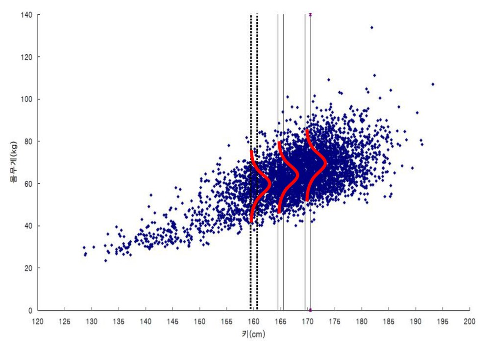
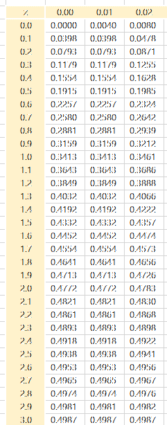
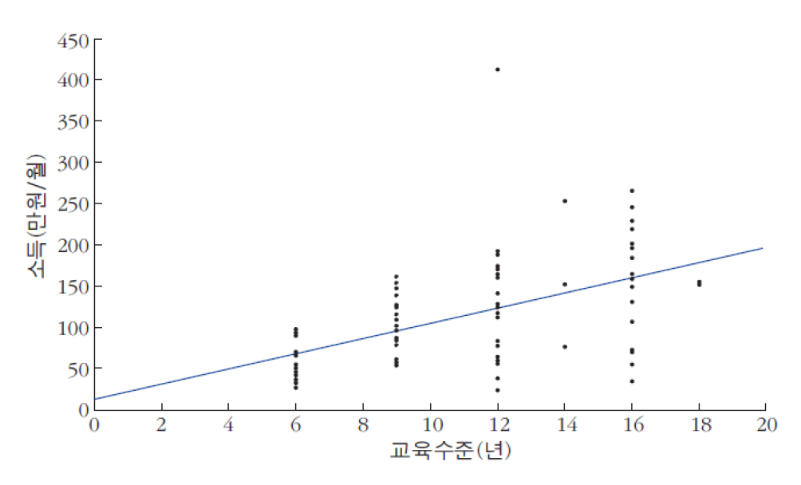
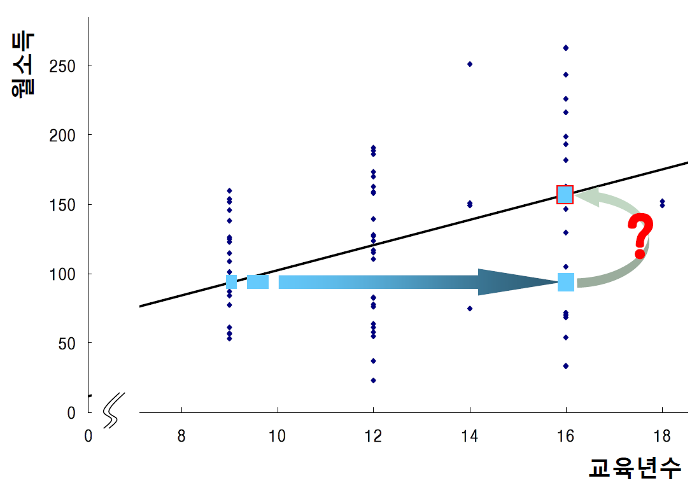
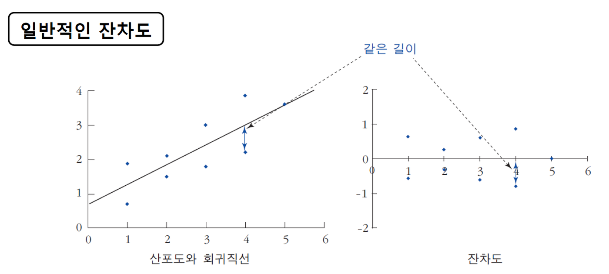
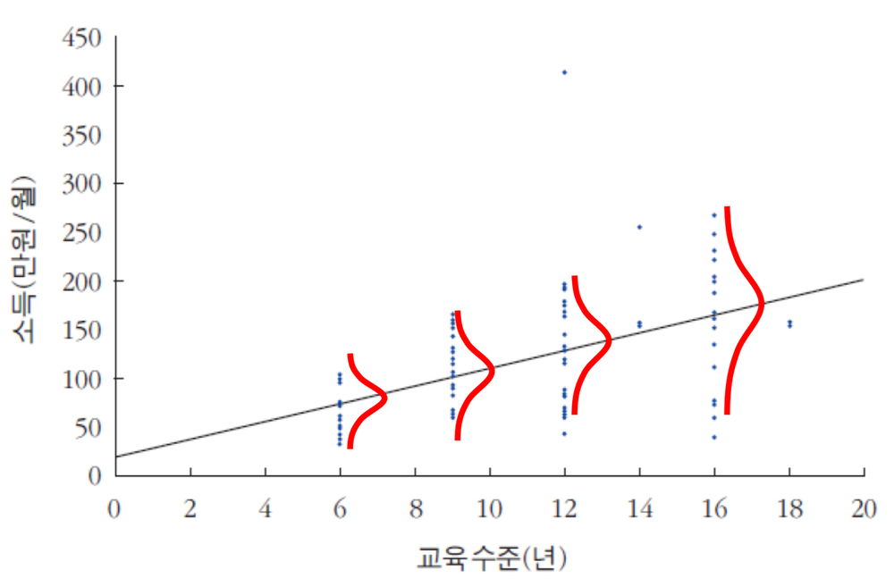

등분산성(homoscedasticity)

퀴즈 1 풀이
1. 다음의 히스토그램은 200명의 교육연수에 대한 분포이다(괄호 안은 밀도). 이를 참고하여 아래의 도수분포표를 작성하시오.
(단, 계급구간은 좌측경계는 포함하되 우측경계는 포함하지 않음)
| 계급 | 절대빈도(명) | 상대빈도(%) | 밀도 |
|---|
2. TOEIC 시험의 점수를 집계한 결과 평균이 750점이고, 표준편차는 100인 정규분포곡선을 따른다고 한다.
500점~600점 사이에는 대략 몇 %의 학생이 있겠는가? 답과 풀이과정을 쓰시오(아래 그림은 표준정규분포표이다).

2. TOEIC 시험의 점수를 집계한 결과 평균이 750점이고, 표준편차는 100인 정규분포곡선을 따른다고 한다.
500점~600점 사이에는 대략 몇 %의 학생이 있겠는가? 답과 풀이과정을 쓰시오(아래 그림은 표준정규분포표이다).
$X \sim N(750,\ 100^2)$
〈정규분포를 따르는 자료의 표준화〉
P(−2.5 ≤ Z ≤ −1.5)
= 0.4938 − 0.4332 = 0.0606
답: 6.06%
3. 다음 명제의 참과 거짓을 판별하시오.
(1) 어떤 데이터 분포가 왼쪽으로 길게 늘어진(left-skewed) 형태를 보일 때 평균, 중앙값, 최빈값의 일반적인 크기 관계는 최빈값 > 중앙값 > 평균이다. (참, 거짓)
(2) 히스토그램에서 상대도수가 아닌 밀도를 활용하는 이유는 모든 막대의 높이를 비슷하게 만들어 미적으로 보기좋게 하기 위함이다. (참, 거짓)
(3) 자료의 표준화는 자료에서 평균을 빼고 표준편차로 나누어 평균은 1, 표준편차는 0으로 만드는 과정이다. (참, 거짓)
x변수에 대응하는 y변수의 “부분집합별” 평균값을 추정하는 통계적 방법

x변수에 대응하는 y변수의 평균값을 추정하는 통계적 방법

분포를 하나의 직선으로 근사 →
회귀직선의 기울기 $= r * \dfrac{SD_y}{SD_x}$
→ 상관계수를 y의 단위로 변환하는 것
→ y= a+(r*SDy/SDx)*X
x변수에 대응하는 y변수의 평균값을 추정하는 회귀직선을 나타내는 방정식
$Y = b_0 + b_1 X$
종속변수(dependent variable, Y)
추정되는 변수 (궁극적으로 알고자 하는 변수)
설명변수(독립변수)(independent variable, X)
종속변수를 추정하기 위해 활용하는 변수
x변수에 대응하는 y변수의 평균값을 추정하는 회귀직선을 나타내는 방정식
회귀직선의 기울기와 절편 구하기

30-40세 도시남성 198명의 표본자료
x변수에 대응하는 y변수의 평균값을 추정하는 회귀직선을 나타내는 방정식
$Y = b_0 + b_1 X$
회귀직선의 기울기와 절편 구하기: 교육연수(X)로 소득(Y)을 추정
도시여성 근로자 108명의 표본자료
예시) 회귀방정식이 다음과 같을 경우

외부에서 임의로 추출한 개인에게 4년의 추가 교육을 시키면 만원 소득이 증가할까?
→ 혼동요인(설명변수 이외의 개입할 다른 요인)이 존재 (개인의 성향, 나이, 가정환경 등)
예. 홈런과 사사구 수의 관계 → 규정타석 타자 / 그 외 타자
예. 홈런과 사사구 수의 관계 → 모든 타자를 고려하되 홈런 수 외에 타석 수를 설명변수로 추가
예시) 회귀방정식이 다음과 같을 경우
외부에서 임의로 추출한 개인에게 4년의 추가 교육을 시키면 만원 소득이 증가할까?
→ 혼동요인(설명변수 이외의 개입할 다른 요인)이 존재 (개인의 성향, 나이, 가정환경 등)
→ 다른 요인으로부터 완벽하게 통제된 실험에서만 가능 하지만 우리의 분석결과는 단지 표본조사를 통해 얻어낸 관측자료에 불과
→ 실험을 통한 통제가 어렵기 때문에 통계적 통제(statistical control)의 수단인 중회귀분석(multiple regression) 수행
단순회귀(single regression)
하나의 설명변수(X)와 종속변수(Y) 간의 관계를 분석
아파트 가격 (Y) = a + b*접근성(X)
(다)중회귀(multiple regression)
둘 이상의 설명변수(X1, X2, X3…)와 종속변수(Y) 간의 관계를 분석
아파트 가격 (Y) = a + b1*접근성(X1) + b2*평수(X2) + b3*연식(X3) …
아파트 가격에 영향을 미치는
다른 요인들을 함께 고려함으로써
접근성이 아파트 가격에 미치는
(가급적) 순수한 영향을 파악
↓
혼동요인을 통제함으로써
관심을 갖는 설명변수가
미치는 영향을 더 잘 설명
“회귀직선이 y의 변화를 설명하는 정도”로서 전체 편차 중에 회귀선이 설명하는 비율을 의미
$R^2 = \dfrac{SSR}{SST} = 1 - \dfrac{SSE}{SST}\quad (0 \le R^2 \le 1)$ 1에 가까울수록 높은 설명력 (단순회귀에서는 상관계수의 제곱)
$y_i - \bar{y} = [(a + b x_i) - \bar{y}] + [y_i - (a + b x_i)]$
$T \quad = \quad R \quad + \quad E$
$\sum (y_i - \bar{y})^2 = \sum [(a + b x_i) - \bar{y}]^2 + \sum [y_i - (a + b x_i)]^2$
$SST \quad = \quad SSR \quad + \quad SSE$
(회귀식으로 설명됨) (회귀식으로 설명 안 됨)
“회귀직선이 y의 변화를 설명하는 정도”로서 전체 편차 중에 회귀선이 설명하는 비율을 의미
$R^2 = \dfrac{SSR}{SST} = 1 - \dfrac{SSE}{SST}$
$(0 \le R^2 \le 1)$
1에 가까울수록 높은 설명력 (단순회귀에서는 상관계수의 제곱)
→ 설명변수가 추가되면 SSE는 무조건 감소
→ 결정계수는 계속 증가 (많은 설명변수를 가진 모형이 무조건 유리?!)
$\text{adj } R^2 = 1 - \dfrac{SSE/(n-k-1)}{SST/(n-1)}$
n = 표본크기
k = 설명변수의 개수
설명변수가 추가될수록 자유도가 감소하도록 조정
→ 설명변수 추가에 따른 SSE의 감소속도 < 설명변수 추가에 따른 자유도 감소속도
→ 표준오차가 증가 → 결정계수는 오히려 감소
$cf)\ SE = \sqrt{\dfrac{\sum (y_i - \hat{y}_i)^2}{n-2}}$
→ 설명변수 추가에 따라 SSE가 충분히 많이 감소해야
(즉, 설명변수가 잔차를 크게 줄여야)
회귀직선의 설명력인 결정계수가 증가
회귀분석을 통해 추정된 기울기와 절편은 표본자료가 바뀌더라도 얼마나 유지될까?
→ 기울기와 절편의 유의성 검정
회귀분석은 어떠한 상황을 만족해야(어떤 조건 하에서만) 신뢰할 만한 분석일까?
→ 회귀분석의 조건과 조건에 위배될 경우에 적합한 다른 방법들
실제값과 회귀직선의 추정치 간의 차이인 잔차의 크기를 y축에 두고, x값의 변화에 따라 표시한 것
→ 잔차도에서 체계적인 패턴(우상향, 우하향, 곡선 등)이 나타날 경우 회귀직선이 y를 충분히 추정하지 못함을 의미

회귀직선은 x의 각 부분집합 내에서 y값들이 평균을 중심으로 일정간격(표준오차)으로 퍼져 있다고 간주
→ 만약 표준오차가 모든 x의 부분집합에서 일정하지 않을 경우, 회귀직선은 x의 부분집합별로 서로 다른 오차를 지님
→ 이분산성이 존재할 경우 y값을 추정하기 위한 회귀직선의 신뢰성에 문제
등분산성(homoscedasticity)

이분산성(heteroscedasticity)

예. 아이스크림 판매량이 증가하면 일사병이 많이 걸린다.
→ 이론적 토대 + 설명 가능여부의 중요성
Q & A
권규상 Kyusang Kwon
kyusang.kwon@chungbuk.ac.kr